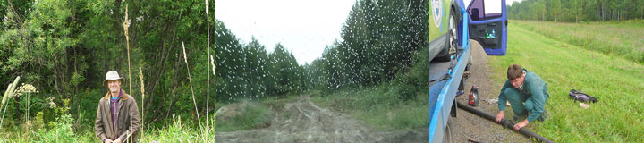
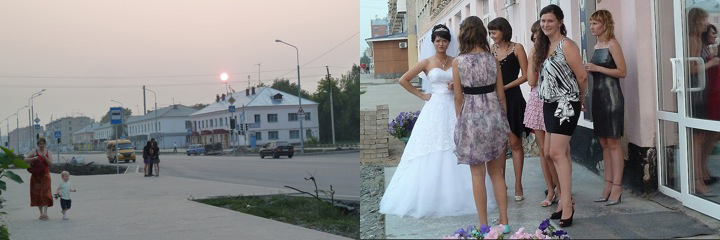
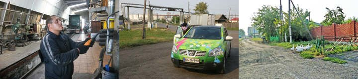
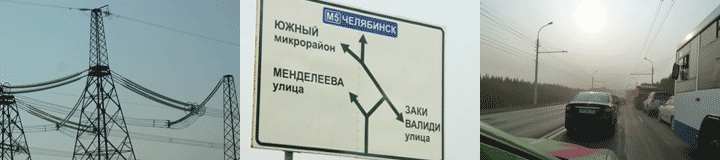

Jack, the young owner of the back-packer hostel Baikaler invited me, Hjalte, Claus and Karen Elise to Listvyanka, the old village by the lake, now turning into a holiday-spot. He showed us around the two roomy ecological log-cabins he was building with solar heating and power generation. The Baikal lake was blue as the sky and big as an ocean. A lot of Sunday-relaxing Russians had taken their cars the 60 kms down to the lake from Irkutsk. Karen Elise and I took a dip in the clear icy water. Later we bought warm smoked Omul fish and cold beer, enjoying it greatly by the beach. In the evening we catched a bus back to Irkutsk, our heads full of sunshine and beauty.
Jack, the young owner of the back-packer hostel Baikaler invited me, Hjalte, Claus and Karen Elise to Listvyanka, the old village by the lake, now turning into a holiday-spot. He showed us around the two roomy ecological log-cabins he was building with solar heating and power generation. The Baikal lake was blue as the sky and big as an ocean. A lot of Sunday-relaxing Russians had taken their cars the 60 kms down to the lake from Irkutsk. Karen Elise and I took a dip in the clear icy water. Later we bought warm smoked Omul fish and cold beer, enjoying it greatly by the beach. In the evening we catched a bus back to Irkutsk, our heads full of sunshine and beauty.
Nina
 Blue sky and glorious sunshine. Summer is back in Irkutsk. Claus and Karen Elise arrived by plane from Denmark and we had a walk down by the river with the old churches. Irkutskians enjoyed themselves, rollerblading, biking, kissing and fishing. We met with Anton and Martha and they told us about staying with railroad-workers at the Baikal-lake and couch-surfing in a crowded flat somewhere in the suburbs. In the evening we all six found a restaurant where Marx street crosses Lenin street. A sweet waitress in a kind of German dress served Russian champagne for us. We celebrated that we all met here - on the day we had planned.
Blue sky and glorious sunshine. Summer is back in Irkutsk. Claus and Karen Elise arrived by plane from Denmark and we had a walk down by the river with the old churches. Irkutskians enjoyed themselves, rollerblading, biking, kissing and fishing. We met with Anton and Martha and they told us about staying with railroad-workers at the Baikal-lake and couch-surfing in a crowded flat somewhere in the suburbs. In the evening we all six found a restaurant where Marx street crosses Lenin street. A sweet waitress in a kind of German dress served Russian champagne for us. We celebrated that we all met here - on the day we had planned.
 The parcel with our spare-parts is not likely to arrive before Monday or Tuesday. What to do? The historical museum saves our day. Here we see how the original Siberians, in particular the Yakuts and the Burjats, lived and dressed - much like the Samic people we know from Scandinavia. We see guns and crosses from imperial Russia and a reconstruction of at stately home. Dusty and unreal. On the upper floor there is an official exhibition about WW2 in Siberia and a strange collection of clothes and household items from each decade of the 20th cen. What to say about hard and cruel times? This is very much an unresolved question.
The parcel with our spare-parts is not likely to arrive before Monday or Tuesday. What to do? The historical museum saves our day. Here we see how the original Siberians, in particular the Yakuts and the Burjats, lived and dressed - much like the Samic people we know from Scandinavia. We see guns and crosses from imperial Russia and a reconstruction of at stately home. Dusty and unreal. On the upper floor there is an official exhibition about WW2 in Siberia and a strange collection of clothes and household items from each decade of the 20th cen. What to say about hard and cruel times? This is very much an unresolved question.
 It has become summer again after days of rain and icy cold. At the river-boat pier we found a table and had a cup of coffee. We shop for our meals at a tiny supermarket next door to our house. Then we sit in Svetlana's kitchen and eat bread with cheese and salami. The window opens to the South and we can get internet-connection on our satellite-terminal and mail home the day's blog. If we are lucky we get our adult children on-line, and Soeren in Denmark. Today we track the parcel - it is now in Moscow waiting transfer to Irkutsk. We would never have managed all the challenges of the tour without our satellite-link - and not to forget the air-time from Inmarsat. Every word and every photo have been on a visit in space on the Inmarsat satellite before landing on this home-page. Fascinating!
It has become summer again after days of rain and icy cold. At the river-boat pier we found a table and had a cup of coffee. We shop for our meals at a tiny supermarket next door to our house. Then we sit in Svetlana's kitchen and eat bread with cheese and salami. The window opens to the South and we can get internet-connection on our satellite-terminal and mail home the day's blog. If we are lucky we get our adult children on-line, and Soeren in Denmark. Today we track the parcel - it is now in Moscow waiting transfer to Irkutsk. We would never have managed all the challenges of the tour without our satellite-link - and not to forget the air-time from Inmarsat. Every word and every photo have been on a visit in space on the Inmarsat satellite before landing on this home-page. Fascinating!
Nina
 Green Car sleeps on the parking lot while we are waiting for the spare parts, promised for next week. A taxi tok us to DHL in a suburb. On the way back we jumped on a tram. Wooden seats, sturdy electric transport plowing through streets full of cars. Hjalte got a hair-cut before we strolled down to the Angara-river. The evening sun shone on the old wooden houses and then the new shop-signs lit up on Karl Marx street. Tired and hungry we found a newly opened cafeteria with heavy furniture in a kind of Mongolian style, beer and cheap fish-dishes.
Green Car sleeps on the parking lot while we are waiting for the spare parts, promised for next week. A taxi tok us to DHL in a suburb. On the way back we jumped on a tram. Wooden seats, sturdy electric transport plowing through streets full of cars. Hjalte got a hair-cut before we strolled down to the Angara-river. The evening sun shone on the old wooden houses and then the new shop-signs lit up on Karl Marx street. Tired and hungry we found a newly opened cafeteria with heavy furniture in a kind of Mongolian style, beer and cheap fish-dishes.
Nina

In the middle of nowhere the tiny "evacuator" breaks down. Oil on the tarmac. The gearbox is cracked open. It is midday, we are bewitched by Russia and besieged by mosquitos and biting insects. Noting to do but keep up the spirits and try and put a counter-spell on everything refusing to move us forward. Misha stops a truck and gets a lift to the nearest town. He returns some hours later with a gearbox-shell, pulls out his hammer and a few tools. He removes the drive shaft and opens the gearbox right there on the dirt. Hjalte sighs. Will it ever spin again… Hours pass. When night falls we put up our tent between tall and poisonous plants. We argue over a tent-pole forgotten somewhere. I am stung three times on my thigh by a cruel wasp and it starts to rain.
Nina


When I understood more than two hundred kilometers difficult potholed dirt-road and rain as well was coming up I just said STOP. I flatly refused to start. My rear battery-box is rather low. I am like a shrimp full of eggs, I really have to take care of the batteries I carry under my belly. Hjalte is talking about replacing the springs with longer ones to raise the car, but I believe it is music of the future. Now I close my eyes and shut my windows and I will not open them again before Irkutsk. See you again on the blog from Irkutsk. Green Car. PS - you can follow me on the map all the way from Omsk to Irkutsk.
Every evening as Hjalte and Nina has to find a place to sleep it is me that decides. When I am low on amps, they just have to take the first hotel turning up. In this way they get surprises every day, and if no hotel shows up they have to sleep in the forrest. Now this evening I drove them to a big old concrete hotel in the town Iz… something. The Soviet-style administration made it hard for Hjalte to find a socket to plug me in. Fuses could not take it, windows were forbidden to open. In the middle of the night Nina had to get up and un-hook me because the administrator found the wire was getting hot. This is normal, but all the time she said Nelsja! Forbidden! So Hjalte had to go down on the street and start up our generator. What a fuss…. No, by far I prefer the small truck-stop motels where I can spend the night talking with the big trucks while I charge. Add to that, that many more people stop to admire my beautiful body and electric parts. My picture is now on thousand mobile phones all over Russia. Green Car.
Naturally the sun was shinning and the temperature was a balmy 38 degrees at lunch-time. While Green Car was charging at a truck-repair shop we were sitting in an air-conditioned cafe next door and had a tasty dish of lasagna. One of the nice surprises you suddenly can enjoy. We are out east where there is far between hotels and cafes. So at the end of the day we thought ourselves lucky to find what on the map appeared to be a town. We drove for some time around skirting deep holes, mud and unforgiving heating-tubes crossing the road in the worn-down town domineered by a vast industrial block. It turned out to be a mountain-like grain elevator, fitting the endless wheat-fields. in this god-forsaken town we eventually found Hotel URAL with eight small rooms and a staff of friendly women. They did not think it a problem to let us use a socket for Green Car. After a couple of badly needed showers I dressed in my blue silken dress and high-heeled shoes. Hjalte put on a clean t-shirt and then we were ready to celebrate my birthday with a bottle of sparkling Russian champagne on the bed.
A lovely day. Only 23 degrees in the morning and 33 degrees at midday. We put up our folding table in the shadow of birch-trees on a parking lot while Green Car gobbled up healthy 380 volt power. Humps on the road kept us awake at the wheel. Heat and heavy trucks has disfigured the tarmac into deep ruts and dangerous ridges. We call them Killer-humps because Green Car has a battery-box down below, and much too close to the Russian ground. But all went well. At night when we had to find power there was none to be reached. Then quickly off the highway and down a dirt-track. Out of sight we pulled out the emergency generator. When we cannot find power from the grid we have to produce it ourselves, we cannot be picky. Heart of the matter is we are propelled 100% by electricity. So we spent the night under the stars, to lazy to put up our tent. The sun dropped and an orange half-moon rose on a sky dotted with stars. In the distance trucks roared by, every ten minutes drowned by the rumble of endless trans-sibirian trains.